Note
While AWS Portal can enable cloud rendering in Deadline 10, AWS Deadline Cloud is a newer offering that has been built specifically for the cloud. It is a fully managed service that does not require installation or maintenance of infrastructure (e.g., repository, database, or license server). Worker fleet auto-scaling, asset synching, and licensing are all managed natively within AWS by Deadline Cloud. See here for more information on Deadline Cloud and its capabilities.
2. Creating a Deadline AWS Portal Infrastructure¶
2.1. Overview¶
Here we will go through the steps for creating an AWS Portal Infrastructure. We will go through the process of opening the Configure Infrastructure dialog, basic configuration options, and finally launching the infrastructure. If you would like to learn more about infrastructures or take a deep look at the Configure Infrastructure dialog, check out the AWS Portal Infrastructure Overview page.
You can find more information about AWS Portal in general here.
2.2. Opening the Configure Infrastructure Dialog¶
Open the Deadline Monitor.
Enter Power User mode (Tools menu → Power User Mode).
Create an AWS Panel (View menu → New Panel → AWS Portal).
Log in if necessary, following the steps in Configure AWS Portal Settings dialog.
Click on the ‘+’ button mid-way on the left of the AWS Portal panel.

The Configure Infrastructure dialog will then open.
2.3. Configuring your Infrastructure¶
Set the Infrastructure Name to a name you’d like to use to refer to the new infrastructure.
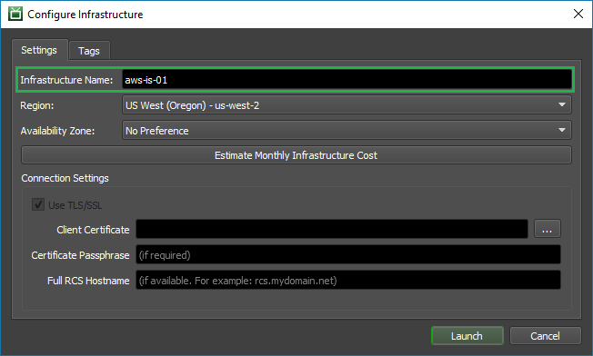Choose the Region that you’d like to create your infrastructure in. You will probably want to choose the region that is geographically closest to you. You can learn more about AWS regions and selecting the right one here.
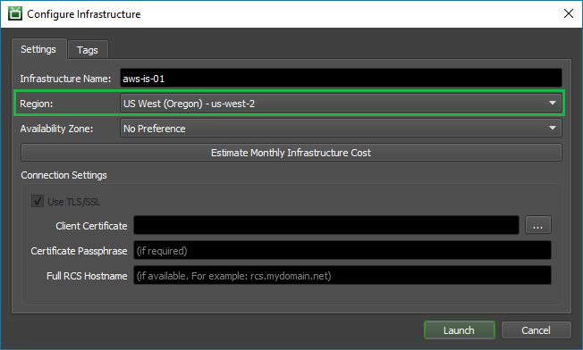Optionally, select the Availability Zone you want your infrastructure created in. We recommend using the default selection of No Preference as this will acquire resources from the most optimal Availability Zone automatically. You can learn more about AWS Availability Zones here.
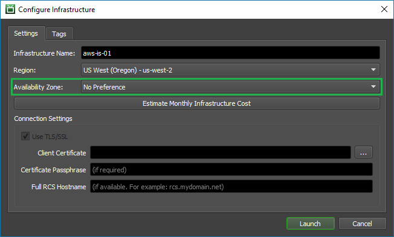Check out the estimated cost of running an infrastructure by clicking the Estimate Monthly Infrastructure Cost. You can learn more about costs and pricing here.
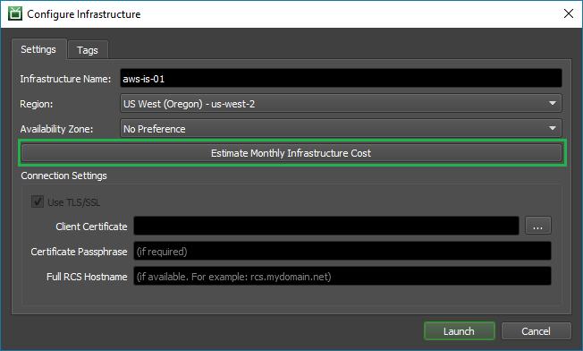Note
The numbers given for the estimated cost are for an infrastructure running 24/7 for a month.
The Remote Connection Server that you chose for AWSPortal (here) will have been setup with TLS enabled or not (here). Ensure that the Use SSL/TLS checkbox here matches that choice; if it does not, then make sure that your RCS is running (here) and then reopen this dialog.
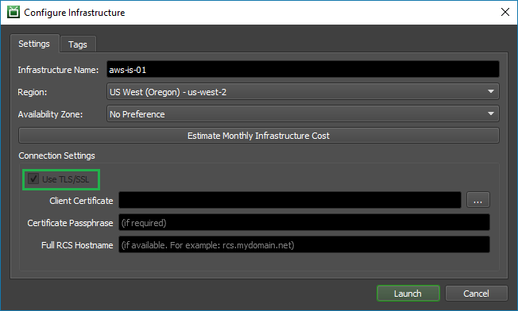If your Remote Connection Server is set up with TLS enabled, then the text boxes within the Connection Settings section of the dialog will accept input:
Your Infrastructure will require a certificate to authenticate with it. Provide the location of the client certificate in the Client Certificate box; you can use the button to the right of the box to bring up a file chooser to navigate to the certificate file.
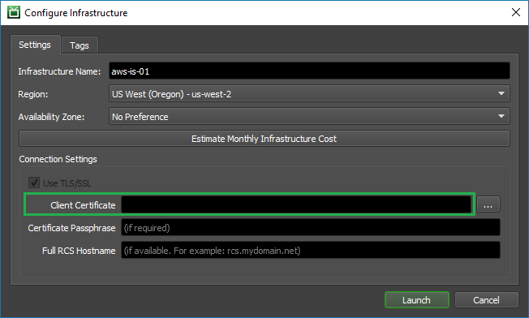Note
If you generated new certificates while installing the Remote Connection Server, then this certificate’s filename is “Deadline10RemoteClient.pfx”.
If your client certificate is secured by a passphrase, then provide that passphrase in the Certificate Passphrase box.
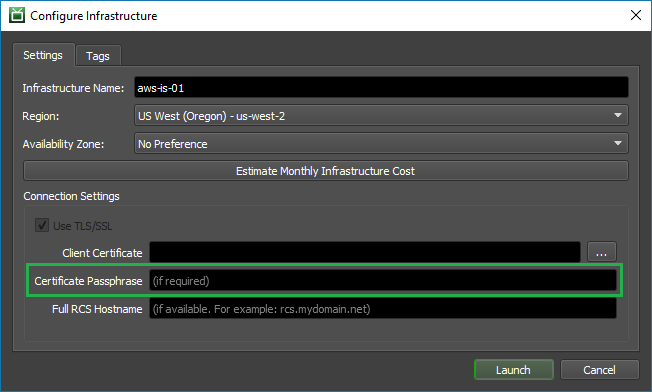If the server that is hosting your Remote Connection Server has a Fully qualified domain name (eg: “connectionserver.mydomain.net”), then you can provide it in the Full RCS Hostname box. If you supply this then the infrastructure will use it to verify that it is connecting to the correct server, and will refuse to connect if the server does not match the given hostname. We strongly recommend providing a hostname here, if you have one, for the added security that it offers.
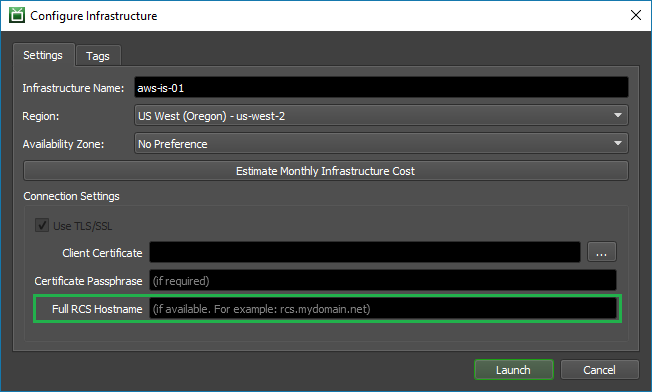Optionally, you can add tags to your infrastructure resources by navigating to the Tags tab and entering them in. Tags can be very useful for cost allocation in billing. You can learn more about tags here.

Finally, press the ‘Launch’ button to create the infrastructure.
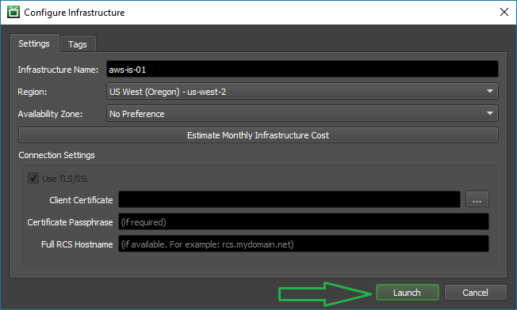
2.4. Completed¶
The new infrastructure will appear in ‘Deadline Infrastructure’ section of the AWS Portal panel. Its status is shown in the ‘Status’ column. Initially, the status will appear as CREATE IN PROGRESS. After some time, the status should become CREATE COMPLETE.
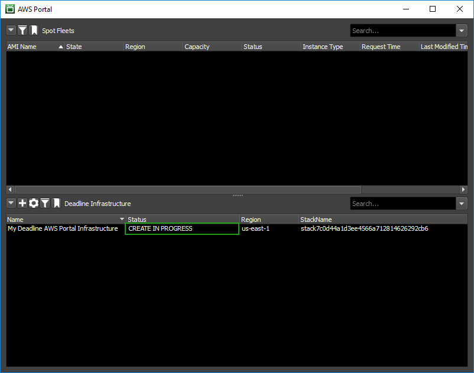 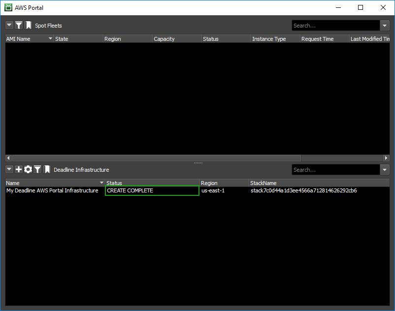2.5. Verifying Connectivity¶
After your new infrastructure has been created then you should verify that it can connect to your Remote Connection Server. If it is not, then you may find a solution to the issue here or on our forums.
2.6. Next Steps¶
Now that you have a working infrastructure created, you are ready to learn how to launch a fleet of render nodes. The AWS Portal Spot Fleet page will take you through that process.
If your infrastructure failed to launch, check out our troubleshooting guide for some possible solutions.

{kind=link}
{kind=link}